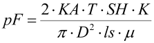
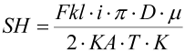
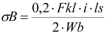
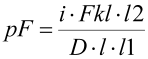
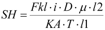
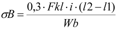

|
|
|


计算
根据表面压力的类型，计算剖分式轮毂时使用一个附加的表面压力系数和抗滑动安全性系数：该系数根据表面压力的类型而变化:
- K = 1 → 均匀表面压力
- K= π^2/8 → 余弦形表面压力
- K = π/2 → 线性接触
在 KISSsoft 中，可在 窗口的选择列表中选择压力类型。
表面压力公式：

滑动安全公式：

弯曲计算式：

表面压力公式：

滑动安全公式：

弯曲计算式：

符号说明：
pF: 表面压力 [N/mm2]
KA：工况系数
T: 公称转矩 [N]
SH: 滑动安全性
K: 表面压力修正因子
l：接合宽度 [mm]
D: 接合面直径 [mm]
lS: 螺栓到轴中心的距离 [mm]
l1: 法向力到转动中心的距离 [mm]
l2: 夹紧力到转动中心的距离 [mm]
μ：摩擦系数
σB: 弯曲应力 [N/mm2]
Fkl: 每个螺栓的夹紧力 [N]
i: 螺栓数量
Wb：抗弯截面系数 [mm3]
Calculations
Depending on the type of surface pressure, an additional factor for surface pressure and safety against sliding is used to calculate a split hub: This varies according to the type of surface pressure:
- K = 1 → uniform surface pressure
- K= π^2/8 → cosine-form surface pressure
- K = π/2 → linear contact
In KISSsoft, you can select the type of pressure in a selection list in the window.
Formula for surface pressure:
Formula for safety against sliding:
Formula for calculating bending:
Formula for surface pressure:
Formula for safety against sliding:
Formula for calculating bending:
Description of codes:
pF: Surface pressure [N/mm2]
KA: Application factor
T: Nominal torque [N]
SH: Safety against sliding
K: Correction factor surface pressure
l: Joint width [mm]
D: Diameter of joint [mm]
lS: Distance bolt to shaft center [mm]
l1: Distance normal force to center of rotation [mm]
l2: Distance clamp load to center of rotation [mm]
μ: Coefficient of friction
σB: Bending stress [N/mm2]
Fkl: Clamp load per bolt [N]
i: Number of bolts
Wb: Moment of resistance [mm3]